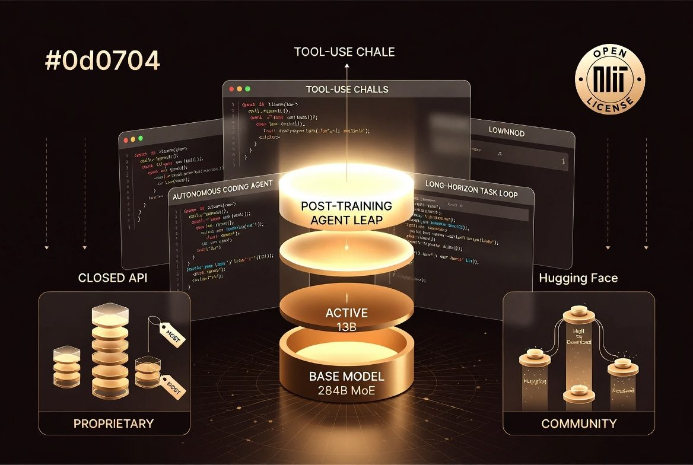
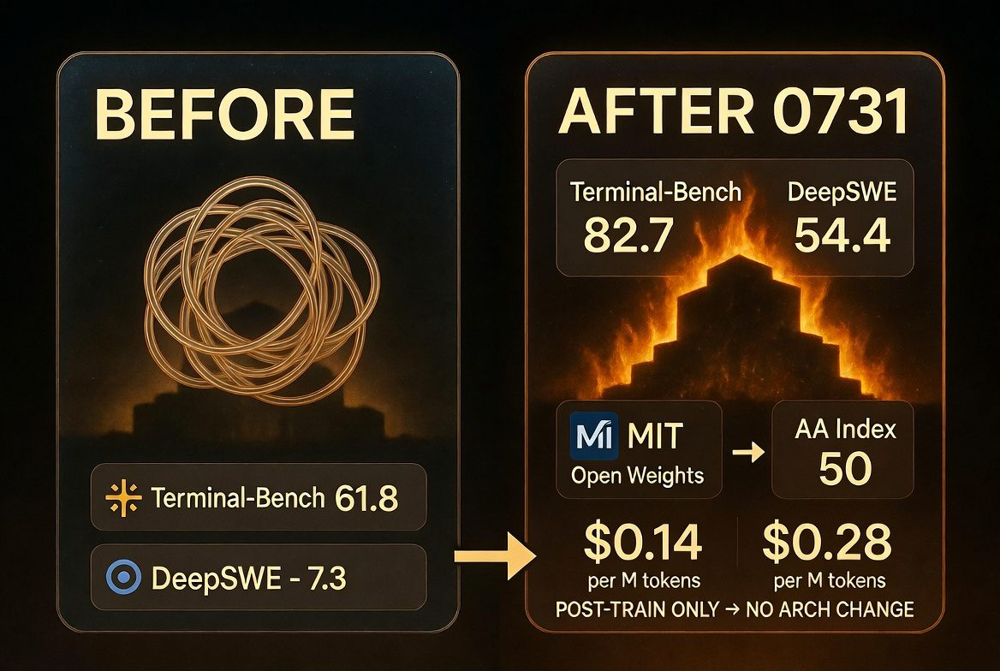

VISUAL SUMMARY · GROK IMAGINE
まず全体像——0731 が動かした「座標」

クリックで拡大図A · 後訓練が頂点の MoE 積層下から BASE 284B MoE → ACTIVE 13B → POST-TRAINING AGENT LEAP。左は高コストなクローズド API、右は MIT / Hugging Face 経由のコミュニティ拡散。エージェント用途（ツール呼び出し・長期ループ）が周囲を取り囲む。

クリックで拡大図B · BEFORE → AFTER 0731骨格は同じ。後訓練だけで Terminal-Bench / DeepSWE が跳ね、AA Index 50、MIT オープンウェイト、$0.14/$0.28 の価格帯が揃った。
テキストで固定する地図（画像の正確な読み取り）
生成画像は比喩。数字・用語・比較はここに正本を置く。
284B MoE · 256 routed + 1 shared · 6 active · 1M ctx · 構造は不変
アクティブ ~13B · DSpark スペキュレーティブ · 3段階 reasoning effort
Terminal / DeepSWE / Toolathlon 等で Pro Preview 超え — 本命の差分
API 公開ベータ + MIT 即日重み · 蒸留・量子化・自前デプロイが加速
アーキ変更なし。後訓練だけでエージェント実務スコアが跳ねた
Terminal-Bench 等は「チャット賢さ」ではなく自律タスク完遂率
より小さい Flash が V4-Pro Preview を複数指標で上回る
同帯知能で Cost/Task 大幅優位 · 98% キャッシュ割引
MIT 即日公開で蒸留・ローカル・社内微調整が即スタート
一行要約：0731 は「もっと大きなモデル」ではなく、同じ骨格をエージェント実務向けに鍛え直し、安く・開いて配ったニュースである。
上の2枚が本スライドの視覚的フック。続く節は、出荷内容・5層のすごさ・ベンチ・経済・アーキ・注釈をテキストで論証する。
WHAT SHIPPED
DeepSeek が出したのは「新しい巨大モデル」ではない
DeepSeek-V4-Flash-0731 は V4-Flash の公式リリースで、4月プレビューを置き換える。DeepSeek 自身の説明は明確で、エージェント能力を大幅強化し、複数ベンチで V4-Pro Preview を上回る一方、構造とサイズは同じ。
- API 公開ベータ —
deepseek-v4-flashが 0731 を配信。Responses API / Codex 親和を強調 - オープンウェイト即日 — Hugging Face
deepseek-ai/DeepSeek-V4-Flash-0731· MIT · ungated - 同梱 DSpark — スペキュレーティブデコード用モジュール（vLLM / SGLang でフラグ1本）
- reasoning_effort —
low/high/maxの三段。高/max は長出力（最大 384K 級） - 価格据え置き — 入力 $0.14 / 出力 $0.28 / キャッシュヒット $0.0028 per 1M tokens
注意：Pro 本命は未着。今回の物語は「Flash が後訓練で先にエージェント面を取りに行った」話であり、最終天井の決着ではない。
WHY IT MATTERS
エンジニア視点の「5層のすごさ」
01 · 実務ベンチエージェント完遂率が跳ねた
- Terminal-Bench / DeepSWE / Toolathlon
- チャット知識よりツールと長期ループ
- コーディングエージェント即戦力に近い
02 · 研究シグナル後訓練がフロンティア差分を決める
- 構造・サイズ不変
- スケーリング則ストーリーではない
- RL / 軌道データ / ツールポリシーの勝利
03 · サイズ逆転小さい Flash が Pro Preview を超える
- 「大きい＝強い」がエージェント領域で崩れる
- 13B active の推論経済が効く
- デプロイと単価の両面で有利
04 · 価格破壊同帯知能で Cost/Task 優位
- AA 50 ≒ Luna(max) 51
- 約 60% 安いタスク単価
- 98% キャッシュ割引がループ向き
05 · 配布形態MIT 即日オープン
- 商用・改変・再配布ほぼ自由
- 量子化・蒸留・社内 SFT が即開始
- クローズドの「強さで守る期間」が短縮
横断 · 産業競争軸の移動
- モデル名 → エージェント単価とハーネス
- オープン基盤がインフラ化
- V4-Pro 本命前にエコシステムを先取り
BENCHMARKS · AGENT LEAP
数字で見る跳躍——公式と独立評価の両方
以下は主に DeepSeek モデルカード報告。条件は DeepSeek Harness（minimal）・max reasoning 等。独立評価は Artificial Analysis。
| ベンチ | V4-Flash-0731 | Flash Preview | V4-Pro Preview | GLM-5.2 | Opus-4.8 |
|---|---|---|---|---|---|
| Terminal Bench 2.1 | 82.7 | 61.8 | 72.1 | 81.0 | 85.0 |
| NL2Repo | 54.2 | 39.4 | 38.5 | 48.9 | 69.7 |
| Cybergym | 76.7 | 38.7 | 52.7 | — | 83.1 |
| DeepSWE | 54.4 | 7.3 | 12.8 | 46.2 | 58.0 |
| Toolathlon-Verified | 70.3 | 49.7 | 55.9 | 59.9 | 76.2 |
| Agents' Last Exam | 25.2 | 15.8 | 16.5 | 23.8 | 25.7 |
| AutomationBench Public | 25.1 | 10.8 | 12.8 | 12.9 | 27.2 |
- AA Intelligence Index 50 — 旧 Flash 40 から +10。GPT-5.6 Luna (max, 51) と 1 ポイント差
- 独立 Terminal-Bench 2.1 ~79% — 公式 82.7 より控えめだが +17pt 級の改善は確認
- GDPval-AA v2 Elo 1559 — 1189 から大幅上昇。オープン勢では Kimi K3 に次ぐ帯
- 出力トークン使用 −12% — 同じ仕事をより短く（＝より安く）回す傾向
読み方：82.7 を絶対真理としない。ただし独立評価も同方向。DSBench 系は内部セットなので外部横断比較には使いにくい。
ECONOMICS
同帯知能 × 異常なコスト効率
FIRST-PARTY API価格帯
- 入力 $0.14 / 1M tokens
- 出力 $0.28 / 1M tokens
- キャッシュヒット $0.0028（約 98% 割引）
- Pro 出力 ($0.87 帯) の約 1/3
INTELLIGENCE VS COSTPareto 前線
- AA Index 50 ≒ Luna 51 / GLM 51
- Cost/Task は Luna(max) より ~60% 安
- OpenAI の値下げ後でも優位（AA 報告）
- エージェントはループでトークンを食うので単価が効く
エージェントの本番コストは「入力単価」より システムプロンプトのキャッシュと1タスクの総トークンで決まる。DeepSeek の攻撃的キャッシュ割引は、長いツールログと固定指示を回す用途に極端に相性が良い。
ARCHITECTURE + DSPARK
13B active で回る理由と推論スタック
V4 技術報告（arXiv:2606.19348）ベースの骨格。0731 で変わったのは主に後訓練側。
共有1 + ルーテッド256 · 6 expert/token · 初期3層は hash routing
巨大リポ・長いツールログ・分岐履歴を抱えやすい
スペキュレーティブで生成 60–85% 向上帯の報告 · HF 表記 ~304B
- 注意は CSA + HCA ハイブリッド、残差は mHC（Manifold-Constrained Hyper-Connections）
- 事前学習は 32T+ tokens + Muon オプティマイザ（V4 レポート）
- ローカル: Unsloth 量子化で 3-bit ~103–110GB / 4-bit ~168GB 帯の報告
- サービング: vLLM / SGLang が expert parallel・FP8 KV・DSpark フラグを即対応
CAVEATS
サプライズしすぎないための注釈
0731 は本物のジャンプだが、銀の弾丸ではない。過熱を避けるための境界線。
- ハーネス依存 — 公式エージェントスコアは DeepSeek Harness 条件。他スタックでは数字が落ちうる
- 総合知性の天井 — AA でも Kimi K3 (57) や最上位クローズドには届かない帯。エージェント特化の跳躍
- メモリ壁 — アクティブ 13B でも expert 常駐。フル精度は多 GPU、量子化でも ~100GB+ 級
- 安全性・透明性 — 重みは開いたが後訓練データ / RL レシピの完全公開ではない
- Pro 本命は未着 — Flash が先にエージェント面を取っただけ。天井競争は続く
正確な理解：サプライズは「人類最高知能の独占開放」ではなく、エージェント実務で使えるフロンティア近傍能力が、安く・開いて・即流通したことにある。
THE BOTTOM LINE
一行で言うと、何が起きたのか
DeepSeek V4-Flash-0731 の本質は、フロンティア競争の主戦場が 「もっと大きな事前学習」から 「後訓練の質 × エージェント完遂率 × 1タスク単価 × オープン配布」へ移ったことを、最もわかりやすく示した点にある。
以前の常識巨大 × クローズド
オープンは少し遅れて少し弱い
0731 の新常識後訓練 × 低コスト × MIT
同じ骨格でも実務エージェントは跳ねる
次の問い実装側
自社のハーネス・キャッシュ・評価を誰が設計するか
だから 7/31–8/1 のエンジニア TL は「また中国モデルが強い」ではなく、「エージェント時代のデフォルト基盤候補が、価格破壊付きでオープンになった」と読んだ——それが深い読みである。
THE BOTTOM LINE
これは「新しい天才モデルが出た」ニュースではない。同じ骨格を後訓練でエージェント実務向けに鍛え直し、フロンティア近傍の能力を安く・MIT で即配布したニュースである。
2026-08-01 — AI Intelligence Hub / Day Slide · DeepSeek V4-Flash-0731 深掘り · スタンドアロンHTML